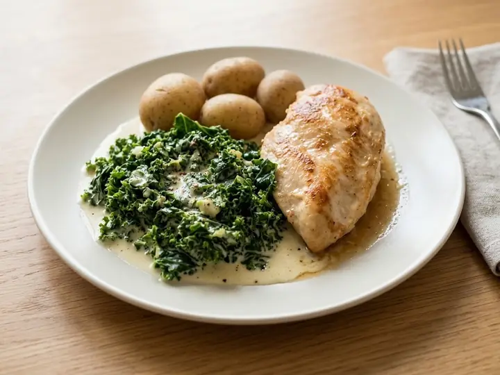

Denmark · Chicken · No. 271
Danish-Style Chicken with Creamed Kale
A single portion of Danish cooking, ready in 23 minutes with 8 minutes of prep. Written for one, so there is nothing to halve and nothing to waste.
Method
- 1
Season the chicken breast and pan-fry in the vegetable oil over medium heat for 6–7 minutes per side until cooked through. Rest and slice.
- 2
Blanch the kale in boiling water for 2–3 minutes, then drain well, squeezing out excess water, and chop finely.
- 3
Melt the butter in a small pan, stir in the flour and cook for 1 minute, then gradually whisk in the milk to make a smooth sauce.
- 4
Stir the kale into the sauce with a pinch of nutmeg and simmer for 2–3 minutes until thickened.
- 5
Serve the sliced chicken with the creamed kale.
Find more like this